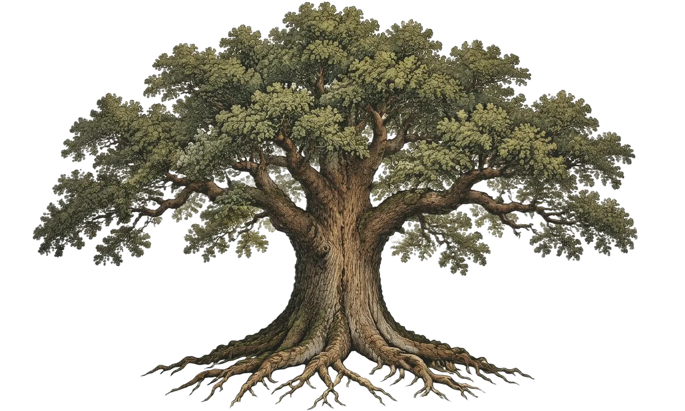

Todo lo que quieras saber de calistenia, en una sola página.
CaliCore está hecha para expandir tu conocimiento del mundo de la calistenia y acompañarte en tu viaje hacia el dominio total de tu cuerpo.

— ejercicios explicados, ordenados en — caminos de progresión dentro de — ramas. Cada camino termina en una cima: hay — por conquistar.
Tres preguntas y te ubicamos en el árbol
Responde con lo que puedes hacer hoy, con buena técnica y sin parar. Te mostramos el ejercicio ideal para empezar en cada rama.
Cada habilidad tiene un camino
Desde las raíces hasta la cima: cada camino ordena los ejercicios del más accesible al más exigente. Elige uno y míralo crecer.
Explorar el árbol completoCada ejercicio, en una tarjeta
Pasa el cursor o toca una tarjeta para darla vuelta. Cada ejercicio trae su ejecución paso a paso, los errores más comunes y su dificultad del 1 al 5.
¿Qué quieres fortalecer?
Elige una zona y te mostramos los ejercicios que la trabajan, del más accesible al más exigente.
Del gimnasio griego a la barra del parque
-
Antigua Grecia
Belleza y fuerza
En los gimnasios griegos se entrenaba con el propio cuerpo. De ahí viene la palabra: kállos (belleza) y sthénos (fuerza).
-
1811 · Berlín
Nacen los aparatos
Friedrich Ludwig Jahn abre un espacio de gimnasia al aire libre y populariza la barra fija y las paralelas.
-
Siglo XX
El propio peso como base
Escuelas, ejércitos y gimnastas convierten las flexiones, las dominadas y las sentadillas en ejercicios básicos en todo el mundo.
-
Hoy
La calle como gimnasio
Desde fines de los 2000, los videos de entrenamiento en parques hicieron del street workout un movimiento global.
Guarda lo que quieres dominar
Marca ejercicios con la estrella en la biblioteca y encuéntralos siempre en tu perfil, listos para entrenar.
Ir a tu perfil